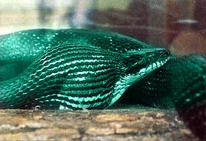

The Serpent and the Egg
A CHUNK OF PARADISE.That's what my wife, Yanna, and I call our homestead on the edge of the Blue Ridge Mountains. We have ponds, a small orchard and a large organic garden. Of course, it wouldn't be paradise without a serpent or two. And do we have serpents! "Some of 'em are big enough to put sidesaddles on," one local old-timer told us. Our area is home to at least 20 kinds of nonpoisonous snakes-not to mention the occasional copperhead or rattlesnake.
One of our neighbors recommended that we put out "snake boards" to monitor the population. These are just pieces of plywood, paneling or sheet metal scattered around the edge of our garden and orchard. Each piece is propped up a few inches on rocks or short sections of 2 x 4. This creates an ideal habitat for snakes-it's warm, dry, dark and protected-and it attracts rodents, which snakes like to eat.
Every now and then we check the boards. If there are copperheads around, I want to know about it-these we dispose of in various ways. Nonpoisonous snakes we enjoy and want to encourage. Not only are the snakes beautiful, but they help control the excessive number of hungry rodents around our house, garden and chicken coop. Over the last few years we have found king snakes, mole snakes, racers, garter snakes, water snakes and corn snakes under our boards.
Early last summer, I was amazed to find two big black rat snakes under the boards. These are among the largest and most handsome of our nonpoisonous snakes. I could tell one had recently eaten by the bulge in its body. Could it have been one of those pesky voles that had been ravaging the potatoes? This was a big lump-maybe it had eaten the rat that had been hanging around the chicken coop. In any case, we were thrilled that they were eating our rodents.
I knew from observing captive snakes that a large meal can take as long as a week to digest. During this process, the snake retreats to a secluded place where it can rest and not have to move its distended body. That's exactly what this snake had done.
Every day we would go out and lift the board just enough to check on them. Whenever friends visited we took them over to see "our" snakes-an awesome sight indeed, as they raised their heads and calmly peered out at us, their tongues flickering curiously above the sprawl of glistening black coils. We noted the bulge in the one snake's body. Even after a week the lump seemed to be the same size.
One morning our friend T.J. came to see us. She is a city apartment dweller who visits us regularly. She wanted to see the snakes, so right after breakfast we went out to the board. On the way, as we passed the chicken coop, we told her that when we had gotten the chickens the month before, we had placed a fake plastic egg in the nesting box as a "nest egg" to encourage the hens to lay there. Strangely, the egg had disappeared. We couldn't find it anywhere, even after we cleaned out the coop.
"The snake ate it," she said with conviction.
"No!" I protested, not even wanting to consider such weirdness in my own backyard. "A snake wouldn't be stupid enough to swallow a plastic egg . . . would it?"
"If a chicken's stupid enough to sit on a plastic egg," she retorted, "then why wouldn't a snake swallow one?"
We lifted the board up. That was all the proof T.J. needed. "There's your egg, right in that snake," she said.
I lowered the board, still not wanting to accept the obvious. It had been weeks since the plastic egg disappeared. I hated the thought that this unfortunate, instinct-bound creature was suffering from a Grade A hunk of plastic lodged in its gut all this time. Nor could I think about the additional suffering I would cause if I made some clumsy attempt at surgery.
Procrastinating was doing no good. I knew I had to act. I reached down and captured the snake. Often, when first caught, a wild snake will struggle or strike defensively, but this one was as gentle as could be. I felt the lump in its body. Sure enough: This was no half-digested rodent-it was exactly the size and shape of our missing plastic hen's egg. The snake was six feet long, the egg lodged 32 inches from the head-almost in the middle.
What now? Surgery? How would I cut it open? How could I sew it back up? My mind raced.
"I have an idea," I said, and started gently squeezing behind the egg. The snake writhed about in my hands, but never attempted to bite. Could it be? The egg began to respond to the pressure. It was moving! Soon Yanna pitched in. Cradling the snake in our arms, we kept squeezing behind the egg, forcing it slowly forward inside the snake, inch by inch. As the egg approached the last foot or so, the snake's own peristalsis took over and it continued the process on its own. Still holding the snake, we watched in awe as the lump continued forward toward the neck. The snake's head hung limply forward. Its mouth was open and it drooled viscous saliva while making a soft-toned gagging noise.
Then the snake unhinged its mouth and the egg appeared. The snake gave one final flick of its head and the egg dropped to the ground, completely unchanged after more than two weeks in the serpent's belly.
We put the snake in a cage and gave it water. It was probably hungry, too, having gone for weeks without food. The next day we offered it a fresh warm egg, wondering how it would respond. Would it ever trust an egg again? Soon its tongue started flickering and before long it wrapped its unhinged jaws around the egg and reversed the process of the day before. It swallowed the egg whole. We watched the egg distend the neck as it moved down the snake. But after about six inches, it stopped. The snake flexed its body, making a right angle bend at the egg. Then we heard the muffled yet unmistakable sound of an egg cracking. Suddenly, the lump had vanished.
It's hard to read a snake's expression, but it seemed to say, "Ah-hh . . . now that's the way things are supposed to be."
Order Doug Elliott's most recent book,Woodslore and Wildwood Wisdom,for $10 postpaid from Possum Productions, Rt. t, Box 388, Union Mills, NC 28167.
|
 |
|
|